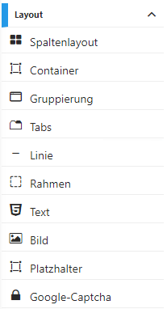
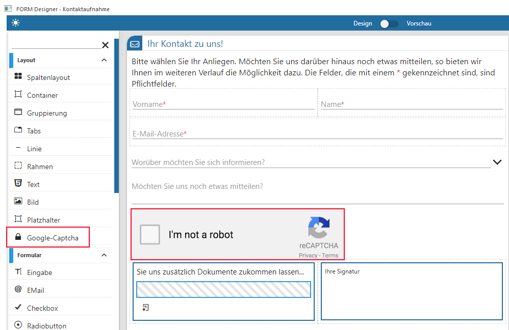
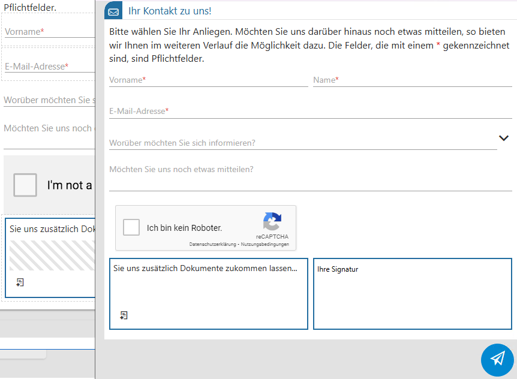
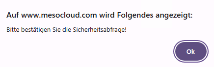
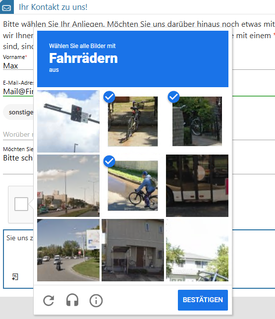
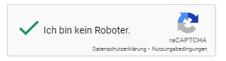
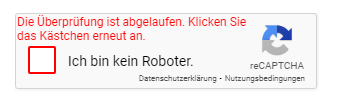

In jedem FORM Formular stehen grundsätzliche Layouts zur Verfügung, mit denen das FORM gestaltet werden kann:

Ø Spaltenlayout
Mit dem Spaltenlayout kann bestimmt werden, wie viele Spalten das Formular grundsätzlich haben soll. In den Einstellungen (Spaltenlayout) können durch Anklicken vom Button "SPALTE HINZUFÜGEN" diverse Spalten eingerichtet werden. Mit dem Kopierbutton werden die hinterlegten Spalten nochmals daruntergesetzt. Klickt man auf den äußeren Rahmen dieses Layouts, öffnen sich die Einstellungen (Spaltenlayout). Der Löschbutton löscht die markierte Spalte. Ein ganzes Spaltenelement kann gelöscht werden, wenn der äußere Rahmen markiert wird. Im Bereich "Optionen" kann die Checkbox "vergrößerbar" angehakt werden. Klickt man in eine einzelne Sparte, wird diese markiert und kann durch Ziehen an den Außenkanten entsprechend vergrößert oder verkleinert werden. Eine markierte Spalte kann aber auch durch den Button "LÖSCHEN" entfernt werden. Mit Hilfe des Buttons "LAYOUT SELEKTIEREN" gelangt man in die Einstellung (Spaltenlayout) zurück.
Ø Container
Hierbei handelt es sich um einen Behälter welcher einen weißen Hintergrund hat. Es ist möglich die Ecken von diesem Behälter zu definieren. Es können alle weiteren Layout und Elemente in diesen Kasten gelegt werden.
Ø Gruppierung
Mit der Gruppierung können mehrere Felder "zusammengefasst" und mit einer "Überschrift" versehen werden. In der Einstellung (Gruppierung) sind neben den Button "KOPIEREN" und "LÖSCHEN" die Optionen "Beschriftung" für dieses Element vorhanden und es kann über die Lupe ein Icon ausgewählt werden, welches in der Darstellung vor der Beschriftung dargestellt wird. Die Kanten können verschieden (leicht, mittel und stark) abgerundet dargestellt werden. Weiterhin werden die Optionen für das Element "Beschriftung ausblenden" und "zusammenklappbar" mit "geschlossener Gruppierung" angeboten.
Ø Tabs
Mit Tabs können "Register" definiert werden, um z.B. mehr Informationen in einem FORM unterzubringen. In den "Optionen" ist der "aktive Tab" auswählbar. Über den Button "EINTRÄGE BEARBEITEN" (in der Klammer steht die Anzahl der bereits zugeordneten Tabs) kann die Anzahl der Tabs mit Icons, Text und einer Beschreibung hinterlegt werden. Die Option "Nur Lesen" steht zur Aktivierung zur Verfügung. Die Anzahl der Tabs wird hierbei über die Icons "+" und "Papierkorb" gesteuert. Mit einem Doppelklick in die jeweilige Spalte wird die Auswahl bzw. Beschriftung möglich. Mit dem Haken in dieser Tabelle werden die Hinterlegungen gespeichert. Welches "Tab" aktiv in der Bearbeitung ist, kann ausgewählt werden. Auch in den Einstellungen (Tabs) befinden sich die Buttons "KOPIEREN" und "LÖSCHEN".
Ø Linie
Wird im Formular eine Trennlinie benötigt, so wird dieses Layout benutzt. Es kann dieses Element kopiert und gelöscht werden. Im Bereich "Optionen" wird die Linienstärke über das Icon "Pfeil nach unten" ausgewählt. Das Flag für "FORM-Farbe verwenden" löst die farbliche Darstellung aus.
Ø Rahmen
Mit dem Design "Rahmen" können Rahmen mit der Option "abgerundete Kanten" (Auswahl: keine, leicht, mittel und stark) im Formular eingefügt werden. Weiterhin können diverse Linientypen und Linienstärke ausgewählt werden. Die für das Formular hinterlegte FORM-Farbe kann zugeordnet werden. Die Funktionen "kopieren" und "löschen" stehen zur Verfügung.
Ø Text
Im Element "Text" steht in den "Optionen" der Editor mit diversen, Schriftarten, Schriftgrößen und Markiervarianten zur Verfügung. Der Text wird im Editorfenster "Einstellungen" mit dem Haken gespeichert. Das Element kann kopiert und gelöscht werden über die zur Verfügung stehenden Buttons.
Ø Bild
Wird das Grundelement "Bild" in die Vorlage gelegt, dann stehen in den Einstellungen (Bild) im Bereich "Optionen" folgende Auswahlen zur Verfügung, nachdem das Bild selbst über die Lupe im Feld "Bild URL" nach der Entscheidung:
ü WinLine Bild
ü Datei Explorer
ü Bild löschen
geladen wurde.
Ø Tooltip
es kann ein Name vergeben werden, welcher dann durch die Mouseoverfunktion im Formular (in der Vorschau ersichtlich) angezeigt wird.
Ø Größe
Die "Größe (%)" bedeutet, das Originalbild kann über die Prozentangabe vergrößert oder verkleinert dargestellt werden.
Ø Design
Im Feld "Design" kann zwischen den Bilddarstellungen Originalbild, Miniaturansicht, abgerundet und Kreis gewählt werden.
Ø Bildposition
Die "Bildposition" bestimmt die Positionen, welche zwischen links, rechts, und zentriert platziert werden kann.
Das Bildelement kann durch den entsprechenden Button kopiert oder gelöscht werden.
Ø Platzhalter
Der eingefügte "Platzhalter" wird schraffiert dargestellt. Neben den Button "KOPIEREN" und "LÖSCHEN" steht die Option für die Einstellung der Höhe des Platzhalters zur Verfügung. Das Minimum hierfür ist 25.
Ø Google-Captcha
Dieses Layout-Element dient der Überprüfung, ob es sich bei dem Benutzer (welcher auf die publizierte FORM gelangt ist) um einen Menschen, oder einen sog. Bot handelt.

Entsprechend wird dieses Layout-Element auch nur beim Ansurfen innerhalb der MesoCloud zur Anzeige gebracht. Innerhalb des FORM DataCenters der WinLine wird es in der gleichen geöffneten FORM ausgeblendet.
Hinweis
Die Grafik skaliert bei der Verwendung im Browser im korrekten Verhältnis zu den sonstigen Elementen. Auch die Beschriftung passt sich der entsprechenden Sprache an.

In der Praxis stellt das Google-Captcha-Element ein Pflichtelement dar: Ohne eine Aktivierung der Checkbox und dem Beantworten der zugehörigen Sicherheitsabfrage können erfasste Werte innerhalb der publizierten FORM nicht übermittelt werden. Es erscheint ein entsprechender Hinweis.

Die eigentliche Sicherheitsabfrage ist zufällig generiert und kann bereits mit wenigen Mausklicks beantwortet werden. Sollte die getätigte Selektion nicht korrekt sein, so wird die Abfrage mit einem anderen Bild wiederholt. Zudem werden unterhalb des Captchas Symbole angezeigt, die z. B. ein neues Bild laden, oder Informationen ausgeben können.

Mit dem Captcha-Button "Bestätigen" wird die getätigte Auswahl verifiziert. Bei korrekter Antwort wird die Checkbox innerhalb der FORM durch einen grünen Haken ersetzt.

Sollte nach dem Durchlaufen der Sicherheitsabfrage und dem Versenden der FORM-Daten zu viel Zeit vergangen sein, so wird der grüne Haken programmseitig automatisch entfernt: Das Zeitfenster ist abgelaufen.

Hinweis
Sollte sich ein Benutzer mit Hilfe der Captcha-Sicherheitsabfrage in der publizierten FORM bereits authentifiziert haben, so muss diese Abfrage beim erneuten Ansurfen nicht zwangsweise erscheinen: Das alleinige Bestätigen der Checkbox reicht zur Erfüllung aus. Dieses Verhalten steht in Abhängigkeit der verwendeten Einstellungen Internet-Browsers.